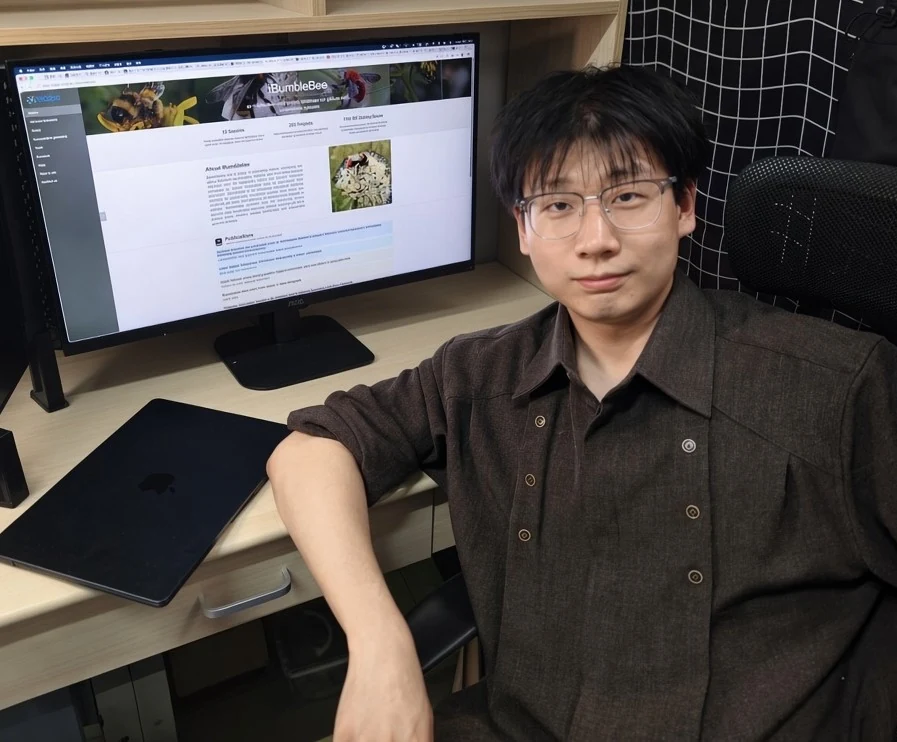
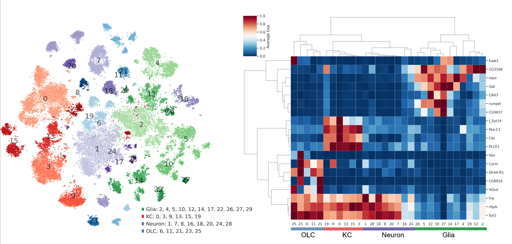
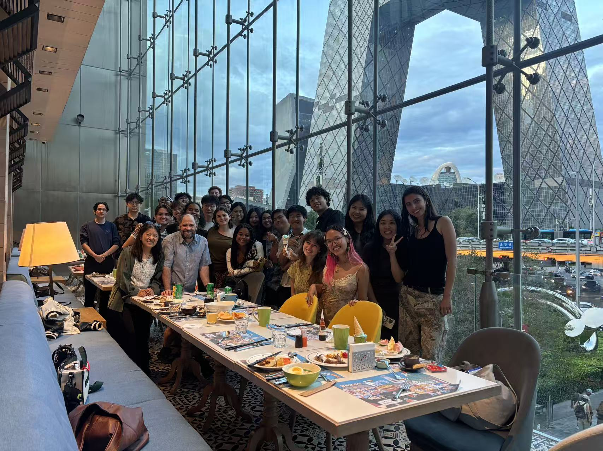
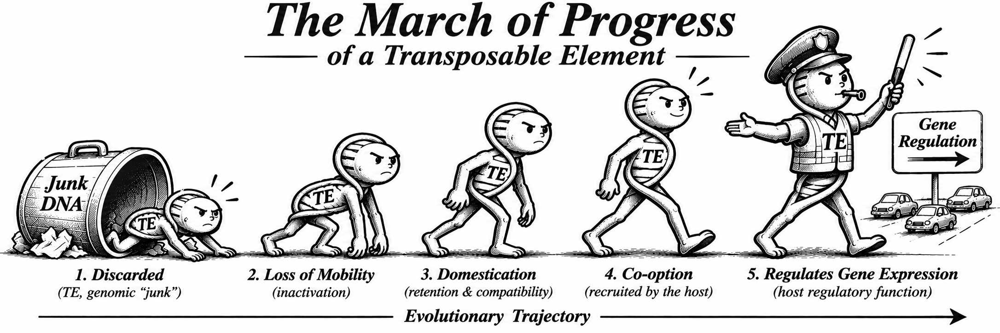

Published · Review
The adaptive roles of active transposable elements in insect hosts.
Current Opinion in Insect Science, 79, 101619.
doi:10.1016/j.cois.2026.101619I’m a third-year master’s student in Bioinformatics at Capital Normal University. I study repetitive sequences and bumblebees. I use multi-omics and mathematical modeling to understand how living systems work, and build platforms that support the scientific community.
Seeking PhD opportunities


Published review
How can DNA that moves around a genome help insects survive a changing environment?
The adaptive roles of active transposable elements in insect hosts
Current Opinion in Insect Science · 79, 101619 (2027)

Master’s thesis · In progress
Tracing the evolutionary history and cell-type expression of transposon-derived genes in bumblebees.
Explore the thesis
Community database
Genomes, gene expression and comparative tools in one place for researchers working across Bombus species.
iBumblebee, an integrated multi-omics database resource for genus-wide bumblebee species
Molecular Ecology Resources · In revision
Science Advances · Accepted November 2026
Connecting repeat-length variation with gene expression and environmental adaptation.

Mathematical modeling & AI for Science
Combining promoter sequence, mRNA half-life and chromatin accessibility to predict gene expression.
Published · Review
Current Opinion in Insect Science, 79, 101619.
doi:10.1016/j.cois.2026.101619Accepted November 2026 · Research article
Science Advances.
About the studyIn revision · Research article
Manuscript in revision at Molecular Ecology Resources.
Explore the database2022 · Random forest feature selection for ancient glass classification
Predicting material properties with multilayer perceptrons
Social network rumor verification track
FusionBERT-CNN for gene expression prediction
2025 · Explainable multimodal AI
Our review on how active transposable elements contribute to insect adaptation is now online in Current Opinion in Insect Science.
Read the review
